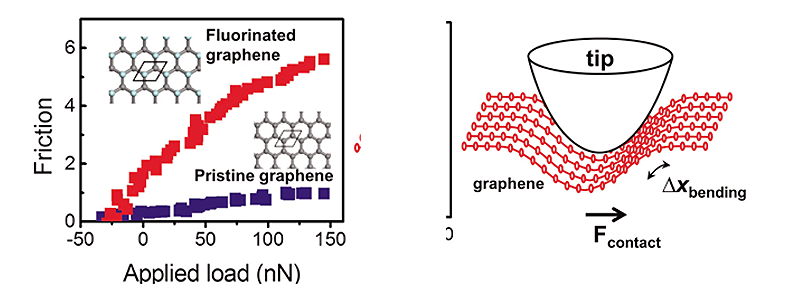

Report by Subjects
Report by Subjects
KAIST RESEARCH ACHIEVEMENTS
Uncovering Abnormal Nanoscale Friction of Graphene
Graduate School of Nanoscience & Technology ·
Graduate School of EEWS
Yong-Hyun Kim · Jeong Young Park
Summary
Yong-Hyun Kim and Jeong Young Park at KAIST, South Korea, unveiled a microscopic mechanism of nanoscale friction by scrutinizing tribological properties of pristine and fluorinated graphenes in collaboration of ultrahigh vacuum friction force microscopy measurements and density functional theory calculations. They unprecedentedly found that nanoscale friction on graphene increases six times after fluorination; this contrasts to a common perception that fluorine is generally used for enhancing lubrication of materials by passivating reactive surfaces. The finding implies that the mechanics of tip-to-graphene nanoscale friction is characteristically different from that of conventional solid-on-solid contact. The KAIST team proposed that nanoscale friction on two-dimensional systems would be dominated by local out-of-plane bending deformations (or flexural phonons), instead of global shear deformations.
R&D Report
Impact of a better understanding of nanoscale friction
The consequences of friction and wear have enormous economic impact, and are of great concern from both a national security and quality-of-life point of view. Indeed, by most recent estimates, improved attention to friction and wear would save developed countries up to 1.6% of their gross national product. As the nanotechnology advances, the moving parts get smaller and the concept of the nanoscale moving parts (or nanomachines) have been intensively studied. For example, we can imagine that a nanomachine can move along the vein of the human body, and kill the cancer cell selectively. In case of nanoscale moving parts, the larger portion of surface of nanostructures leads to the greater effects of surface adhesion or friction. Therefore, better understanding and controlling of the nanoscale frictions would bring great implications.
Friction is everywhere in modern life
The ubiquitous force, however, is not well understood at the microscopic scale except the fact that friction force is in principle a part of the electrostatic force. It should be associated with energy dissipation, but the dissipation mechanics are not fully analyzed with modern quantum mechanics. Recently, graphene has risen as a future material for microelectronic devices and micromechanical machines. Graphene is also an ideal test bed for unveiling nanoscale friction because of the intrinsic two-dimensional anisotropy; it is very rigid within the plane, but very flexible out of the plane. Recently, many have reported unusual, somewhat controversial tribological (or frictional) properties of graphitic systems, including multilayer effects, puckering effects, negative friction coefficients, direction-dependent super-lubricity, etc. In spite of such intensive research on graphene nanoscale friction, no consensus has been reached on its mechanics at the nanoscale.

Figure 1. (Left) Enhanced nanoscale friction of fluorinated.
(right) graphene with respect to pristine graphene.
(Right) Bending deformation responsible for nanoscale friction on graphene.
Novel friction properties of graphene
The KAIST collaboration team that was led by Prof. Yong-Hyun Kim and Prof. Jeong Young Park uniquely discovered a clue for understanding nanoscale mechanics of friction by scrutinizing tribological properties of pristine and fluorinated graphenes in collaboration of ultrahigh vacuum friction force microscopy measurements and density functional theory calculations. In general, coating materials with fluorine decreases friction on the surface because of reduced stickiness. The team, however, found that fluorinated graphene shows the opposite in friction. The tiny tip of an atomic force microscope, slides more easily over graphene than it does over the same sheet coated with fluorine atoms, although the surface stickiness is similarly reduced. Theorists analyzed the tip-to-graphene contact and found that the most modulated property of fluorinated graphene is the out-of-plane bending stiffness, and thus the flexural phonon. This clearly contrasts to a conventional understanding of nanoscale friction that nanoscale friction is dominated by the shear deformation. The KAIST team also suggested that the graphene friction can be easily controlled by chemical modification of the surface. This information could be very useful for building graphene-based nanomechanical machines to avoid excess friction.
Research Funding
The work was supported by WCU (World Class University) programs (R-31-2008-000-10055-0 and R31-2008-000- 10071-0) and National Research Foundation (NRF) programs (KRF-2012-009249 and KRF-2010-0005390) of Korea funded by the Ministry of Education, Science and Technology (MEST) of Korea.
Research Results
- 2 journal publications and 1 invited talk in the international conference. - S. Kwon, J.-H. Ko, K.-J. Jeon, Y.-H. Kim, and J. Y. Park, Nano Lett. 12, 6043 (2012). (Highlighted in Nature, Nature 487, 143 (2012).) UJ.-H. Ko, S. Kwon, I.-S. Byun, J. S. Choi, B. H. Park, Y.-H. Kim, and J. Y. Park, Tribol. Lett., (in press, 2013).